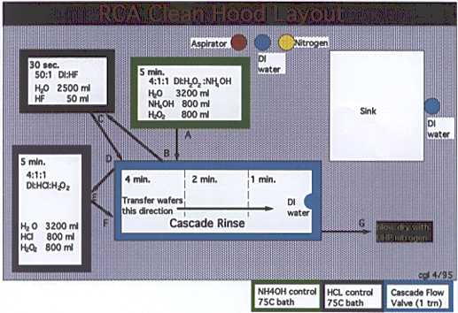

Fume hood for silicon wafer cleaning (reverse RCA clean)
This hood is equiped with a Nyont alarm (on the left side); the alarm indicates inadequate reduced pressure in the exhaust line to provide fume hood protection. If it sounds, lower the sash all the way, leave the room, and notify authorities. Reference for RCA clean technique (by an originator):
Handbook of Semiconductor Wafer Cleaning Technology, Werner Kern, Noyes Publications, Park Ridge NJ, 1993.
Also: W. Kern and D. Puotinen, RCA Review 31:187-206 (1970)
Clean Procedure (see figure below): A. Organic removal: 5 minutes in SC-1 solution (also known as standard clean 1, Huang A, and and APM for Ammonia/peroxide mix) of 4:1:1 DI:H2O2:NH4OH solution at 75C to remove organics and particles. B. Cascade Rinse in DI water. C. Oxide removal: 30 seconds in DHF solution (for dilute hydrofluoric acid) of 50:1 DI:HF solution to remove oxide and metal contamination. D. Cascade Rinse in DI water. E. Metal removal: 5 minutes in SC-2 solution (also known as standard clean 2, Huang B, and HPM for Hydrochloric/peroxide mix) of 4:1:1 DI:H2O2:HCl solution at 75C to remove metals and for a clean thin oxide. F. Cascade Rinse in DI water. G. Blow dry with UHP grade nitrogen gas.Safety precautions:
You must be trained to use the RCA clean, and you must wear:
- double gloves (nitrile cleanroom gloves plus outer acid gloves)
- an acid apron
- splash goggles
- Note that HF is particularly dangerous
- Hydrofluoric acid (49% 0.2micron filtered SEMI grade) protocol
- Hydrochloric acid (37% 0.2 micron filtered SEMI grade)
- Ammonium Hydroxide (29% 0.2 micron filtered SEMI grade)
- Hydrogen Peroxide (30% 0.2 micron filtered SEMI grade))
RCA Hood layout and proceedure
DISCLAIMER
External users beware. The information on this page is correct and to the best of our knowledge, but neither the author nor the Trustees of Dartmouth College accept legal responsibility for any errors that may be present here. This page was designed for internal use, and assumes certain safety features and protocols built into the Thayer School Microengineering laboratory. The MSDS information is copyrighted and available only to Dartmouth users.
|
|
Dartmouth Engineering | Microengineering Lab |